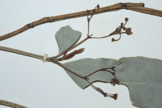
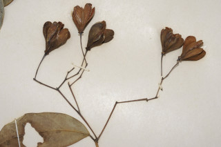
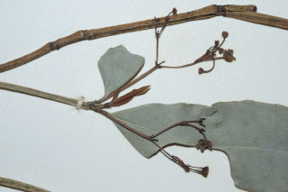
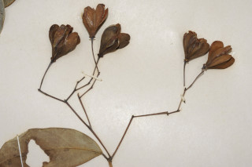

Small trees, up to 5 m tall.
5 ಮೀ ಎತ್ತರದವರೆಗೆ ಬೆಳೆಯುವ ಸಣ್ಣ ಮರಗಳು.
5 മീറ്റര് വരെ ഉയരത്തില് വളരുന്ന ചെറുമരങ്ങള്.
சிறிய மரம் 5 மீ. உயரம் வரை வளரக்கூடியது.
Branchlets distinctly quadrangular, glabrous.
ಕಿರುಕೊಂಬೆಗಳು ಸ್ಪಷ್ಟವಾದ ನಾಲ್ಕು ಕೋನಗಳನ್ನು ಹೊಂದಿರುತ್ತವೆ ಹಾಗೂ ರೋಮರಹಿತವಾಗಿರುತ್ತವೆ.
വ്യക്തമായി ചതുഷ്ക്കോണത്തിലുളളതും അരോമിലവുമായ ഉപശാഖകള്.
சிறிய நுனிக்கிளைகள் குறுக்குவெட்டுத் தோற்றத்தில் நான்கு கோணங்களுடையது கொண்டது, உரோமங்களற்றது.
Leaves simple, opposite, decussate; stipules caducous; petiole 0.4-0.7 cm long, canaliculate, glabrous; lamina 5-10 x 1.3-4 cm, narrow elliptic or lanceolate, apex narrowly acute or acuminate, base acute; margin thick, slightly incurved, glabrous; secondary_nerves obscure beneath, slightly visible above; tertiary_nerves obscure.
ಎಲೆಗಳು ಸರಳವಾಗಿದ್ದು,ಕತ್ತರಿಯಾಕಾರದ ಅಭಿಮುಖ ಜೋಡನಾ ವ್ಯವಸ್ಥೆಯಲ್ಲಿರುತ್ತವೆ; ಕಾವಿನೆಲೆಗಳು ಉದುರಿ ಹೋಗುವಂತಹ ಮಾದರಿಯವು;ಎಲೆತೊಟ್ಟುಗಳ ಉದ್ದ0.4 ರಿಂದ 0.7 ಸೆಂ.ಮೀ ಇದ್ದು ಕಾಲುವೆಗೆರೆ ಸಮೇತವಾಗಿರುತ್ತವೆ ಹಾಗೂ ರೋಮರಹಿತವಾಗಿರುತ್ತವೆ;ಪತ್ರಗಳು 5- 10X 1.3 - 4 ಸೆಂ.ಮೀ ಗಾತ್ರವಿದ್ದು,ಅಂಡವೃತ್ತಾಕೃತಿ ಅಥವಾ ಭರ್ಜಿಯಾಕಾರಲ್ಲಿದ್ದು ಸಂಕುಚಿತವಾಗಿ ಚೂಪಾದ ಅಥವಾ ಕ್ರಮೇಣ ಚೂಪಾಗುವ ಮಾದರಿಯ ತುದಿ ಹಾಗೂ ಚೂಪಾದ ಬುಡವನ್ನು ಹೊಂದಿರುತ್ತವೆ, ಪತ್ರದ ಅಂಚು ಮಂದವಾಗಿದ್ದುಕೊಂಚ ಒಳತಿರುವು ಹೊಂದಿರುತ್ತದೆ;ಪತ್ರಗಳು ರೋಮರಹಿತವಾಗಿರುತ್ತವೆ;ಎರಡನೇ ದರ್ಜೆಯ ನಾಳಗಳು ಪತ್ರದ ತಳಭಾಗದಲ್ಲಿ ಅಸ್ಪಷ್ಟವಾಗಿರುತ್ತವೆ;ಮೂರನೇ ದರ್ಜೆಯ ನಾಳಗಳು ಅಸ್ಪಷ್ಟ.
സമ്മുഖ, ഡെക്കുസേറ്റ് ക്രമത്തിലുളള ലഘുപത്രങ്ങള്; (അനുപത്രങ്ങള്) വേഗത്തില് കൊഴിഞ്ഞ് പോകുന്നതാണ്; ഇലഞെട്ടിന് 0.4 സെ.മീ മുതല് 0.7 സെ.മീ വരെ നീളം, ചാലോട് കൂടിയതാണ്, അരോമിലവും; പത്രഫലകത്തിന് 5 സെ.മീ മുതല് 10 സെ.മീ വരെ നീളവും 1.3 സെ.മീ മുതല് 4 സെ.മീ വരെ വീതിയും, വീതികുറഞ്ഞ ദീര്ഘവൃത്താകാരമോ കുന്താകാരമോ ആണ്, പത്രാഗ്രം നേര്ത്ത് കൂര്ത്തതോ ചെറുവാലോട് കൂടിയതോ, പത്രാധാരം കൂര്ത്തതാണ്; കട്ടിയേറിയ അരികുകള്, ചെറുതായി അകത്തേക്ക് വളഞ്ഞിരിക്കുന്നു, അരോമിലം; ദ്വിതീയ ഞരമ്പുകള് കീഴ്ഭാഗത്ത് അസ്പഷ്ടമാണ്, മുകളില് അല്പ്പം തെളിഞ്ഞു കാണാം; ത്രിതീയ ഞരമ്പുകള് അസ്പഷ്ടമാണ്.
இலைகள் தனித்தவை, எதிரடுக்கமானவை, குறுக்குமறுக்கமானவை; இலையடிச்செதில் உதிரக்கூடியது; இலைக்காம்பு 0.4-0.7 செ.மீ. நீளமானது, குறுக்குவெட்டுத் தோற்றத்தில் கேனாலிகுலேட், உரோமங்களற்றது; இலை அலகு 5-10 X 1.3-4 செ.மீ., குறுகிய நீள்வட்டம் அல்லது ஈட்டிவடிவம், அலகின் நுனி குறுகிய கூரியது அல்லது அதிக்கூரியது, அலகின் தளம் கூரியது; அலகின் விளிம்பு தடித்தது, சிறிது உள்நோக்கி வளைந்து (ரெவலுட்), உரோமங்களற்றது; இரண்டாம் நிலை நரம்புகள் அடிப்பரப்பில் தெளிவில்லாமல் காணப்படும், மேற்பரப்பில் சிறிது தெளிவாக காணப்படும்; மூன்றாம் நிலை நரம்புகள் தெளிவற்றது.
Inflorescence axillary cymes; flowers dull purple.
ಹೂಗಳು ಮಂದವಾದ ಕೆನ್ನೀಲಿ ಬಣ್ಣ ಹೊಂದಿದ್ದು ಅಕ್ಷಾಕಂಕುಳಿನಲ್ಲಿರುವ ಮಧ್ಯಾರಂಭಿ ಮಾದರಿಯ ಪುಷ್ಪಮಂಜರಿಯಲ್ಲಿರುತ್ತವೆ; ಹೂಗಳು ಮಬ್ಬಾದ ಕೆನ್ನೀಲಿ ಬಣ್ಣದವು.
പൂങ്കുലകള് കക്ഷീയ സൈമുകളാണ്; മങ്ങിയ ഊതനിറത്തിലുളള പൂക്കള്.
இலைக்கோணங்களில் அமைந்த சைம் மஞ்சரி; மலர்கள் பளபளப்பற்ற பர்ப்பிள் நிறமுடையது.
Capsule, obovate, 5 winged, 1-2 seeds per lobe.
ಸಂಪುಟ ಫಲಗಳು ಬುಗುರಿಯಾಕಾರ ಹೊಂದಿದ್ದು ಐದು ರೆಕ್ಕೆಗಳ ಸಮೇತವಿದ್ದು ಒಂದರಿಂದ ಎರಡು ಬೀಜಗಳನ್ನು ಹೊಂದಿರುತ್ತವೆ..
അഞ്ച് ചിറകുകളുളളതും, അപാണ്ഡാകൃതിയിലുളളതുമായ കായകള്, ഓരോ ഭാഗത്തും ഒന്നോ രാേ വിത്തുകള്.
கேப்சூல், தலைகீழ் முட்டை வடிவம், 5 இறக்கைகளுடையது, 1-2 விதைகள் ஒவ்வொரு பகுதியிலும் காணப்படும்.

 


